1 Game Theory
1.1 What is Game Theory?
Game Theory is the formal study of strategic interaction.
In a strategic setting the actions of several agents are interdependent. Each agent’s outcome depends not only on his actions, but also on the actions of other agents. How to predict opponents’ play and respond optimally?
Everything is a game…
- poker, chess, soccer, driving, dating, stock market
- advertising, setting prices, entering new markets, building a reputation
- bargaining, partnerships, job market search and screening
- designing contracts, auctions, insurance, environmental regulations
- international relations, trade agreements, electoral campaigns
Most modern economic research includes game theoretical elements. Eleven game theorists have won the economics Nobel Prize so far.
Brief History
- Cournot (1838): quantity setting duopoly
- Zermelo (1913): backward induction
- von Neumann (1928), Borel (1938), von Neumann and Morgenstern (1944): zero-sum games
- Flood and Dresher (1950): experiments
- Nash (1950): equilibrium
- Selten (1965): dynamic games
- Harsanyi (1967): incomplete information
- Akerlof (1970), Spence (1973): first applications
- 1980s boom, continuing nowadays: repeated games, bargaining, reputation, equilibrium refinements, industrial organization, contract theory, mechanism/market design
- 1990s: parallel development of behavioral economics
- more recently: applications to computer science, political science, psychology, evolutionary biology
Key Elements of a Game
- Players: Who is interacting?
- Strategies: What are the options of each player? In what order do players act?
- Payoffs: How do strategies translate into outcomes? What are players’ preferences over possible outcomes?
- Information/Beliefs: What do players know/believe about the situation and about one another? What actions do they observe before making decisions?
- Rationality: How do players think?
Normal-Form Games
A normal (or strategic) form game is a triplet (N, S, u) with the following properties:
- N=\{1,2, \ldots, n\}: finite set of players
- S_{i} \ni s_{i}: set of pure strategies of player i
- S=S_{1} \times \cdots \times S_{n} \ni s=\left(s_{1}, \ldots, s_{n}\right): set of pure strategy profiles
- S_{-i}=\prod_{j \neq i} S_{j} \ni S_{-i}: pure strategy profiles of i’s opponents
- u_{i}: S \rightarrow \mathbb{R}: payoff function of player i ; u=\left(u_{1}, \ldots, u_{n}\right).
Outcomes are interdependent. Player i \in N receives payoff u_{i}\left(s_{1}, \ldots, s_{n}\right) when s=\left(s_{1}, \ldots, s_{n}\right) \in S is played.
The structure of the game is common knoweldge: all players know (N, S, u), and know that their opponents know it, and know that their opponents know that everyone knows, and so on.
The game is finite if S is finite.
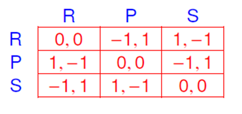
1.2 Dominated Strategies
Are there obvious predictions about how a game should be played?
Advertising War: Coke vs. Pepsi
- Without any advertising, each company earns \$ 5 \mathrm{~b} / year from Cola consumers.
- Each company can choose to spend \$ 2 \mathrm{~b} / year on advertising.
- Advertising does not increase total sales for Cola, but if one company advertises while the other does not, it captures \$ 3 b from the competitor.
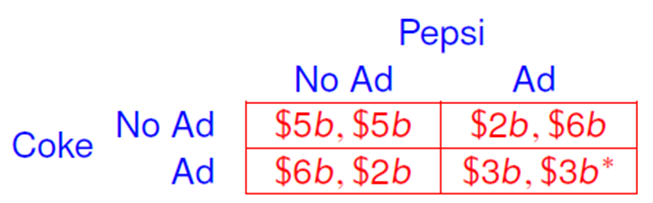
- What will the Cola companies do?
- Is there a better feasible outcome?
Prisoners’ Dilemma (PD)
Flood and Dresher (1950): RAND corporation’s investigations into game theory for possible applications to global nuclear strategy
- Two persons are arrested for a crime.
- There is not enough evidence to convict either.
- Different cells, no communication.
- If a suspect testifies against the other (“Defect”) and the other does not (“Cooperate”), the former is released and the latter gets a harsh punishment.
- If both prisoners testify, they share the punishment.
- If neither testifies, both serve time for a smaller offense.
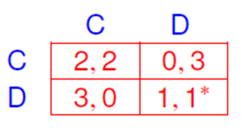
- Each prisoner is better off defecting regardless of what the other does. We say D strictly dominates C for each prisoner.
- The resulting outcome is (D, D), which is worse than (C, C).
Modified Prisoners’ Dilemma
Consider the game obtained from the prisoners’ dilemma by changing player 1’s payoff for (C, D) from 0 to 2.
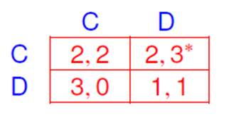
- No matter what player 1 does, player 2 still prefers D to C.
- If player 1 knows that 2 never plays C, then he prefers C to D.
- Unlike in the prisoners’ dilemma example, we use an additional assumption to reach our prediction in this case: player 1 needs to deduce that player 2 never plays a dominated strategy.
Definition 1.1 (Strictly Dominated Strategies) A strategy s_{i} \in S_{i} is strictly (s.) dominated by \sigma_{i} \in \Delta\left(S_{i}\right) if
u_{i}\left(\sigma_{i}, s_{-i}\right)>u_{i}\left(s_{i}, s_{-i}\right), \forall s_{-i} \in S_{-i}
Pure Strategies May Be Dominated by Mixed Strategies
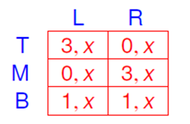
1.3 The Beauty Contest
- Players: everyone in the class
- Strategy space: any number in \{1,2, \ldots, 100\}
- The person whose number is closest to 2 / 3 of the class average wins the game.
- Payoffs: one randomly selected winner receives \$ 1.
Why is this game called a beauty contest?
Keynesian Beauty Contest
Keynes described the action of rational actors in a market using an analogy based on a newspaper contest. Entrants are asked to choose a set of 6 faces from photographs that they find “most beautiful”. Those who picked the most popular face are eligible for a prize.
A naive strategy would be to choose the 6 faces that, in the opinion of the entrant, are most beautiful. A more sophisticated contest entrant, wishing to maximize the chances of winning against naive opponents, would guess which faces the majority finds attractive, and then make a selection based on this inference.
This can be carried one step further to account for the fact that other entrants would each have their own opinions of what public perceptions of beauty are. What does everyone believe about what everyone else believes about whom others find attractive?
The Beauty Contest and the Stock Market
It is not a case of choosing those faces that, to the best of one’s judgment, are really the prettiest, nor even those that average opinion genuinely thinks the prettiest. We have reached the third degree where we devote our intelligences to anticipating what average opinion expects the average opinion to be. And there are some, I believe, who practice the fourth, fifth and higher degrees.
John Maynard Keynes,
General Theory of Employment, Interest and Money, 1936
Keynes suggested that similar behavior is observed in the stock market. Shares are not priced based on what people think their fundamental value is, but rather on what they think everyone else thinks the value is and what they think about these beliefs, and so on.
1.4 Iterated Deletion of Strictly Dominated Strategies
We can iteratively eliminate dominated strategies, under the assumption that “I know that you know that other players know… that everyone knows the payoffs and that no one would ever use a dominated strategy.”
Definition 1.2 For all i \in N, set S_{i}^{0}=S_{i} and define S_{i}^{k} recursively by
S_{i}^{k}=\left\{s_{i} \in S_{i}^{k-1} \mid \nexists \sigma_{i} \in \Delta\left(S_{i}^{k-1}\right), u_{i}\left(\sigma_{i}, s_{-i}\right)>u_{i}\left(s_{i}, s_{-i}\right), \forall s_{-i} \in S_{-i}^{k-1}\right\}
The set of pure strategies of player i that survive iterated deletion of s. dominated strategies is S_{i}^{\infty}=\cap_{k \geq 0} S_{i}^{k}. The set of surviving mixed strategies is
\left\{\sigma_{i} \in \Delta\left(S_{i}^{\infty}\right) \mid \nexists \sigma_{i}^{\prime} \in \Delta\left(S_{i}^{\infty}\right), u_{i}\left(\sigma_{i}^{\prime}, s_{-i}\right)>u_{i}\left(\sigma_{i}, s_{-i}\right), \forall s_{-i} \in S_{-i}^{\infty}\right\}
Remarks
In a finite game, the elimination procedure ends in a finite number of steps, so S^{\infty} is simply the set of strategies left at the final stage.
In an infinite game, if S is a compact metric space and u is continuous, then one can use Cantor’s theorem (a decreasing nested sequence of non-empty compact sets has nonempty intersection) to show that S^{\infty} \neq \emptyset.
Definition assumes that at each iteration all dominated strategies of every player are deleted simultaneously. In a finite game, the limit set S^{\infty} does not depend on the particular order in which deletion proceeds.
Outcome does not change if we eliminate s. dominated mixed strategies at every step. A strategy dominated against all pure strategies of the opponents iff it is dominated against all their mixed strategies. Eliminating mixed strategies for player i at any stage does not affect the set of s. dominated pure strategies for any j \neq i at the next stage.
1.5 Detour on Common Knowledge
- Is common knowledge a sensible assumption? What does the definition of S_{i}^{100} entail?
- Higher order beliefs, common knowledge of rationality…
- Why did the strategy of choosing 1 not win in the beauty contest?
The Story of the Unfaithful Wives
- A village with 100 married couples and a high priest.
- The men had to pass a logic exam before being allowed to marry.
- It is common knowledge that the high priest is truthful.
- The men would gossip about adulterous relationships and each knows which of the other wives are unfaithful.
- No one would ever inform a husband about his cheating wife.
- The high priest knows that some wives are unfaithful and decides that such immorality should no longer be tolerated.
- The priest convenes all the men at the temple and publicly announces that the integrity of the village has been compromised-there is at least one cheating wife.
- He also points out that even though no one knows whether his wife is faithful, each man has heard about the other unfaithful wives.
- He orders that every man certain of his wife’s infidelity should shoot her at midnight.
- 39 silent nights went by and. . on the 40^{\text {th }} shots were heard.
How many wives were shot? Were all the unfaithful wives murdered? How did men learn of the infidelity of their wives after 39 nights in which nothing happened?
Rationalizability
- Solution concept introduced independently by Bernheim (1984) and Pearce (1984).
- Like iterated dominance, rationalizability derives restrictions on play from common knowledge of payoffs and the fact that players are “reasonable.”
- Dominance: unreasonable to use a strategy that performs worse than another (fixed) one in every scenario.
- Rationalizability: irrational for a player to choose a strategy that is not a best response to some beliefs about opponents’ strategies.
What is a “Belief”?
- Bernheim & Pearce: every player i’s beliefs \sigma_{-i} about the play of j \neq i must be independent, i.e., \sigma_{-i} \in \prod_{j \neq i} \Delta\left(S_{j}\right).
- Alternatively, allow player i to believe that the actions of opponents are correlated, i.e., any \sigma_{-i} \in \Delta\left(S_{-i}\right) is a possibility.
- The two definitions have different implications for n \geq 3.
Focus on case with correlated beliefs. Such beliefs represent a player’s uncertainty about his opponents’ actions, not necessarily his theory about their deliberate randomization and coordination.
Player i may place equal probability on two scenarios: either both j and k pick action A or they both play B. If i is not sure which theory is true, then his beliefs are correlated even though he knows that j and k are acting independently.
Definition 1.3 (Best Responses) A strategy \sigma_{i} \in S_{i} is a best response to a belief \sigma_{-i} \in \Delta\left(S_{-i}\right) if
u_{i}\left(\sigma_{i}, \sigma_{-i}\right) \geq u_{i}\left(s_{i}, \sigma_{-i}\right), \forall s_{i} \in S_{i}
Rationalizabile Strategies
Common knowledge of payoffs and rationality imposes restrictions on play…
Definition 1.4 Set S^{0}=S and let S^{k} be given recursively by
S_{i}^{k}=\left\{s_{i} \in S_{i}^{k-1} \mid \exists \sigma_{-i} \in \Delta\left(S_{-i}^{k-1}\right), u_{i}\left(s_{i}, \sigma_{-i}\right) \geq u_{i}\left(s_{i}^{\prime}, \sigma_{-i}\right), \forall s_{i}^{\prime} \in S_{i}^{k-1}\right\}
The set of correlated rationalizable strategies for player i is S_{i}^{\infty}=\bigcap_{k \geq 0} S_{i}^{k}. A mixed strategy \sigma_{i} \in \Delta\left(S_{i}\right) is rationalizable if there is a belief \sigma_{-i} \in \Delta\left(S_{-i}^{\infty}\right) s.t. u_{i}\left(\sigma_{i}, \sigma_{-i}\right) \geq u_{i}\left(s_{i}, \sigma_{-i}\right) for all s_{i} \in S_{i}^{\infty}.
The definition of independent rationalizability replaces \Delta\left(S_{-i}^{k-1}\right) and \Delta\left(S_{-i}^{\infty}\right) with \prod_{j \neq i} \Delta\left(S_{j}^{k-1}\right) and \prod_{j \neq i} \Delta\left(S_{j}^{\infty}\right), resp.
Rationalizability in Cournot Duopoly
Two firms compete on the market for a divisible homogeneous good.
- Each firm i=1,2 has zero marginal cost and simultaneously decides to produce an amount of output q_{i} \geq 0.
- The resulting price is p=1-q_{1}-q_{2}.
- Profit of firm i is q_{i}\left(1-q_{1}-q_{2}\right).
Best response of one firm if the other produces q is
B(q)=\max (0,(1-q) / 2)(j=3-i) ; B is decreasing. If q \lesseqgtr r then
B(q) \gtreqless(1-r) / 2.
- Since q \geq q^{0}:=0, only strategies q \leq q^{1}:=B\left(q^{0}\right)=\left(1-q^{0}\right) / 2 are best responses, S_{i}^{1}=\left[q^{0}, q^{1}\right].
- Then only q \geq q^{2}:=B\left(q^{1}\right)=\left(1-q^{1}\right) / 2 survives the second round of elimination, S_{i}^{2}=\left[q^{2}, q^{1}\right] \ldots
- We obtain a sequence
q^{0} \leq q^{2} \leq \ldots \leq q^{2 k} \leq \ldots \leq q^{2 k+1} \leq \ldots \leq q^{1}
where q^{2 k}=\sum_{l=1}^{k} 1 / 4^{l}=\left(1-1 / 4^{k}\right) / 3 and q^{2 k+1}=\left(1-q^{2 k}\right) / 2 s.t. S_{i}^{2 k+1}=\left[q^{2 k}, q^{2 k+1}\right] and S_{i}^{2 k}=\left[q^{2 k}, q^{2 k-1}\right] for all k \geq 0.
\lim _{k \rightarrow \infty} q^{k}=1 / 3, so the only rationalizable strategy for firm i is q_{i}=1 / 3 (the Nash equilibrium).
What strategies are rationalizable with more than two firms?
Never Best Responses
A strategy \sigma_{i} \in \Delta\left(S_{i}\right) is never a best response for player i if it is not a best response to any correlated belief \sigma_{-i} \in \Delta\left(S_{-i}\right).
Recall that \sigma_{i} \in \Delta\left(S_{i}\right) is s. dominated if \exists \sigma_{i}^{\prime} \in \Delta\left(S_{i}\right) s.t.
u_{i}\left(\sigma_{i}^{\prime}, s_{-i}\right)>u_{i}\left(\sigma_{i}, s_{-i}\right), \forall s_{-i} \in S_{-i}
Theorem 1.1 In a finite game, a strategy is never a best response iff it is s. dominated.
Corollary 1.1 Correlated rationalizability and iterated strict dominance coincide.
If \sigma_{i} is s. dominated by \sigma_{i}^{\prime}, then \sigma_{i} is not a best response for any belief \sigma_{-i} \in \Delta\left(S_{-i}\right): \sigma_{i}^{\prime} yields a higher payoff than \sigma_{i} for player i against any \sigma_{-i}. Left to prove that a strategy that is not \mathrm{s}. dominated is a best response for some beliefs.
Suppose \tilde{\sigma}_{i} is not s. dominated for player i.
- Define set of “dominated payoffs” for i by
D=\left\{x \in \mathbb{R}^{S_{-i}} \mid \exists \sigma_{i} \in \Delta\left(S_{i}\right), x \leq u_{i}\left(\sigma_{i}, \cdot\right)\right\}
D is non-empty, closed, and convex.
- u_{i}\left(\tilde{\sigma}_{i}, \cdot\right) does not belong to the interior of D because it is not \mathrm{s}. dominated by any \sigma_{i} \in \Delta\left(S_{i}\right).
- By the supporting hyperplane theorem, \exists \alpha \in \mathbb{R}^{S_{-i}} \backslash\{\mathbf{0}\} s.t.
\alpha \cdot u_{i}\left(\tilde{\sigma}_{i}, \cdot\right) \geq \alpha \cdot x, \forall x \in D
In particular, \alpha \cdot u_{i}\left(\tilde{\sigma}_{i}, \cdot\right) \geq \alpha \cdot u_{i}\left(\sigma_{i}, \cdot\right), \forall \sigma_{i} \in \Delta\left(S_{i}\right).
- Since D is not bounded from below, \alpha has non-negative components.
- Normalize \alpha so that its components sum to 1 ; \alpha interpreted as a belief in \Delta\left(S_{-i}\right) with the property that
u_{i}\left(\tilde{\sigma}_{i}, \alpha\right) \geq u_{i}\left(\sigma_{i}, \alpha\right), \forall \sigma_{i} \in \Delta\left(S_{i}\right)
Thus \tilde{\sigma}_{i} is a best response to belief \alpha.
Iteration and Best Responses
Theorem 1.2 For every k \geq 0, each s_{i} \in S_{i}^{k} is a best response (within S_{i} ) to a belief in \Delta\left(S_{-i}^{k-1}\right).
Fix s_{i} \in S_{i}^{k} ; s_{i} is a best response within S_{i}^{k-1} to some \sigma_{-i} \in \Delta\left(S_{-i}^{k-1}\right). If s_{i} were not a best response within S_{i} to \sigma_{-i}, let s_{i}^{\prime} be a best response.
Since s_{i} is a best response within S_{i}^{k-1} to \sigma_{-i} and s_{i}^{\prime} is a better response than s_{i} to \sigma_{-i}, we need s_{i}^{\prime} \notin S_{i}^{k-1}.
Then s_{i}^{\prime} was deleted at an earlier stage, say s_{i}^{\prime} \in S_{i}^{l-1} but s_{i}^{\prime} \notin S_{i}^{\prime} for some I \leq k-1. This contradicts the fact that s_{i}^{\prime} is a best response in S_{i} \supseteq S_{i}^{l-1} to \sigma_{-i} \in \Delta\left(S_{-i}^{k-1}\right) \subseteq \Delta\left(S_{-i}^{\prime-1}\right).
Corollary 1.2 If the game is finite, then each s_{i} \in S_{i}^{\infty} is a best response (within S_{i} ) to a belief in \Delta\left(S_{-i}^{\infty}\right).
Closed under Rational Behavior
Definition 1.5 A set Z=Z_{1} \times \ldots \times Z_{n} with Z_{i} \subseteq S_{i} for i \in N is closed under rational behavior if, for all i, every strategy in Z_{i} is a best response to a belief in \Delta\left(Z_{-i}\right).
If the game is finite (or if S is a compact metric space and u is continuous), then S^{\infty} is the largest set closed under rational behavior.
S^{\infty} is closed under rational behavior by Corollary 2. Suppose that there exists Z_{1} \times \ldots \times Z_{n} \not \subset S^{\infty} that is closed under rational behavior.
Consider the smallest k for which there is an i such that Z_{i} \not \subset S_{i}^{k}. It must be that k \geq 1 and Z_{-i} \subseteq S_{-i}^{k-1}.
By assumption, every element of Z_{i} is a best response to an element of \Delta\left(Z_{-i}\right) \subset \Delta\left(S_{-i}^{k-1}\right), contradicting Z_{i} \nsubseteq S_{i}^{k}.
Epistemic Foundations of Rationalizability
Formalize the idea of common knowledge and show that rationalizability captures the idea of common knowledge of rationality (and payoffs).
Definition 1.6 (Information Structure) An information (or belief) structure is a list \left(\Omega,\left(l_{i}\right)_{i \in N},\left(p_{i}\right)_{i \in N}\right)
- \Omega is a finite state space
- l_{i}: \Omega \rightarrow 2^{\Omega} is a partition of \Omega for each i \in N s.t. l_{i}(\omega) is the set of states that i thinks are possible when the true state is \omega; \omega^{\prime} \in l_{i}(\omega) \Leftrightarrow \omega \in l_{i}\left(\omega^{\prime}\right)
- p_{i, l_{i}(\omega)} \in \Delta\left(l_{i}(\omega)\right): i^{\prime} ’s belief at \omega
Interpretation
- State \omega summarizes all the relevant facts about the world. Only one of the states is true; all others are hypothetical states needed to encode players’ beliefs.
- In state \omega, player i is informed that the state is in l_{i}(\omega) and gets no other information.
- Such an information structure arises if each player observes a state-dependent signal and l_{i}(\omega) is the set of states for which player i ’s signal is identical to the signal at \omega.
Knowledge and Common Knowledge
For any event F \subseteq \Omega, player i knows at \omega that F obtains if l_{i}(\omega) \subseteq F. The event that i knows F is
K_{i}(F)=\left\{\omega \mid I_{i}(\omega) \subseteq F\right\}
The event that everyone knows F is defined by
K(F)=\cap_{i \in N} K_{i}(F)
Let K^{0}(F)=F and K^{t+1}(F)=K\left(K^{t}(F)\right) for t \geq 0. Set K^{\infty}(F)=\bigcap_{t \geq 0} K^{t}(F) . K^{\infty}(F) is the set of states where F is common knowledge.
Public Events
K\left(K^{\infty}(F)\right)=K^{\infty}(F) \rightarrow alternative definition of common knowledge
Event F^{\prime} is public if F^{\prime}=\cup_{\left(\omega^{\prime} \in F^{\prime}\right.} l_{i}\left(\omega^{\prime}\right) for all i. If F^{\prime} is public, then K\left(F^{\prime}\right)=F^{\prime}, so K^{\infty}\left(F^{\prime}\right)=F^{\prime}.
Lemma 1.1 An event F is common knowledge at \omega iff there exists a public event F^{\prime} with \omega \in F^{\prime} \subseteq F.
If F is common knowledge at \omega, there exists a submodel that includes state \omega and respects the information structure where F is true state by state.
Strategies
Fix a finite game (N, S, u). To give strategic meaning to information states, introduce a strategy profile \mathbf{s}: \Omega \rightarrow S.
A strategy profile \mathbf{s}: \Omega \rightarrow S is adapted with respect to \left(\Omega,\left(I_{i}\right)_{i \in N},\left(p_{i}\right)_{i \in N}\right) if \mathbf{s}_{i}(\omega)=\mathbf{s}_{i}\left(\omega^{\prime}\right) whenever l_{i}(\omega)=l_{i}\left(\omega^{\prime}\right).
Players must choose a constant action at all states in each information set since they cannot distinguish states in the same information set.
An epistemic model \left(\Omega,\left(l_{i}\right)_{i \in N},\left(p_{i}\right)_{i \in N}, \mathbf{s}\right) consists of an information structure and an adapted strategy profile.
Common Knowledge of Rationality
For an epistemic model \left(\Omega,\left(l_{i}\right)_{i \in N},\left(p_{i}\right)_{i \in N}, \mathbf{s}\right), player i is rational at \omega \in \Omega if
\mathbf{s}_{i}(\omega) \in \arg \max _{s_{i} \in S_{i}} \sum_{\omega^{\prime} \in l_{i}(\omega)} u_{i}\left(s_{i}, \mathbf{s}_{-j}\left(\omega^{\prime}\right)\right) p_{i, l_{i}(\omega)}\left(\omega^{\prime}\right)
Definition 1.7 A strategy s_{i} \in S_{i} consistent with common knowledge of rationality if there exists a model \left(\Omega,\left(l_{j}\right)_{j \in N},\left(p_{j}\right)_{j \in N}, \mathbf{s}\right) and state \omega^{*} \in \Omega with \mathbf{s}_{i}\left(\omega^{*}\right)=s_{i} at which it is common knowledge that all players are rational.
Equivalently, \exists\left(\Omega,\left(l_{j}\right)_{j \in N},\left(p_{j}\right)_{j \in N}, \mathbf{s}\right) s.t. \mathbf{s}_{j}(\omega) is a best response to \mathbf{s}_{-j} at each \omega \in \Omega for every player j \in N.
For any i \in N and s_{i} \in S_{i}, s_{i} is consistent with common knowledge of rationality iff s_{i} \in S_{i}^{\infty}.
Can extend result to allow for payoff uncertainty (adding the hypothesis that payoffs are common knowledge at the relevant state).
\Rightarrow) Fix s_{i} consistent with common knowledge of rationality.
\exists\left(\Omega,\left(l_{j}\right)_{j \in N},\left(p_{j}\right)_{j \in N}, \mathbf{s}\right) with \omega^{*} \in \Omega s.t. \mathbf{s}_{i}\left(\omega^{*}\right)=s_{i} and
\mathbf{s}_{j}(\omega) \in \arg \max _{s_{j} \in S_{j}} \sum_{\omega^{\prime} \in \ell_{j}(\omega)} u_{j}\left(s_{j}, \mathbf{s}_{-j}\left(\omega^{\prime}\right)\right) p_{j, l, j}(\omega)\left(\omega^{\prime}\right), \forall j \in N, \omega \in \Omega
Define Z_{j}=\mathbf{s}_{j}(\Omega). Note that s_{i}=\mathbf{s}_{i}\left(\omega^{*}\right) \in s_{i}(\Omega)=Z_{i}. By Theorem 3, to show that s_{i} \in S_{i}^{\infty}, it suffices to prove that Z is closed under rational behavior.
\forall z_{j} \in Z_{j}, \exists \omega \in \Omega s.t. z_{j}=\mathbf{s}_{j}(\omega). Define \mu_{j, \omega} \in \Delta\left(Z_{-j}\right) by
\mu_{j, \omega}\left(s_{-j}\right)=\sum_{\omega^{\prime} \in l_{j}(\omega), \mathbf{s}_{-j}\left(\omega^{\prime}\right)=s_{-j}} p_{j, l_{j}(\omega)}\left(\omega^{\prime}\right)
Then
\begin{aligned} z_{j} & =\mathbf{s}_{j}(\omega) \in \arg \max _{s_{j} \in S_{j}} \sum_{\omega^{\prime} \in l_{j}(\omega)} u_{j}\left(s_{j}, \mathbf{s}_{-j}\left(\omega^{\prime}\right)\right) p_{i, l_{j}(\omega)}\left(\omega^{\prime}\right) \\ & =\arg \max _{s_{j} \in S_{j}} \sum_{s_{-j} \in Z_{-j}} \mu_{j, \omega}\left(s_{-j}\right) u_{j}\left(s_{j}, s_{-j}\right) \end{aligned}
(\Leftarrow) Since S^{\infty} is closed under rational behavior, for every s_{i} \in S_{i}^{\infty}, there exists \mu_{i, s_{i}} \in \Delta\left(S_{-i}^{\infty}\right) for which s_{i} is a best response. Define the model \left(S^{\infty},\left(l_{i}\right)_{i \in N},\left(p_{i}\right)_{i \in N}, \mathbf{s}\right):
\begin{aligned} l_{i}(s) & =\left\{s_{i}\right\} \times S_{-i}^{\infty} \\ p_{i, s}\left(s^{\prime}\right) & =\mu_{i, s_{i}}\left(s_{-i}^{\prime}\right) \\ \mathbf{s}(s) & =s \end{aligned}
In this model, it is common knowledge that every player is rational:
\begin{aligned} & \forall s \in S^{\infty}, \mathbf{s}_{i}(s)=s_{i} \in \arg \max _{s_{i}^{\prime} \in S_{i}} \sum_{s_{-i} \in S_{-i}^{\infty}} u_{i}\left(s_{i}^{\prime}, s_{-i}\right) \mu_{i, s}\left(s_{-i}^{\prime}\right) \\ &=\arg \max _{s_{i}^{\prime} \in S_{i}} \sum_{s^{\prime} \in l_{i}(s)} u_{i}\left(s_{i}^{\prime}, s_{-i}\right) p_{i, s}\left(s^{\prime}\right) \end{aligned}
For every s_{i} \in S_{i}^{\infty}, there exists s=\left(s_{i}, s_{-i}\right) \in S^{\infty} s.t. \mathbf{s}_{i}(s)=s_{i}, showing that s_{i} is consistent with common knowledge of rationality.
1.6 Nash Equilibrium
Many games are not dominance solvable. Nevertheless, the involved parties find a solution.
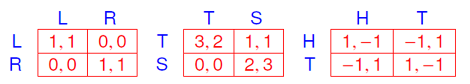
A Nash equilibrium is a strategy profile with the property that no player can benefit by deviating from his corresponding strategy.
Definition 1.8 (Nash 1950) A mixed-strategy profile \sigma^{*} is a Nash equilibrium if for every i \in N,
u_{i}\left(\sigma_{i}^{*}, \sigma_{-i}^{*}\right) \geq u_{i}\left(s_{i}, \sigma_{-i}^{*}\right), \forall s_{i} \in S_{i}
Remarks
- The fact that there is no profitable deviation in pure strategies implies there is no profitable deviation in mixed strategies either.
- If in equilibrium a player uses a mixed strategy that places positive probability on several pure strategies, he must be indifferent between all pure strategies in its support.
- Strategies that do not survive iterated strict dominance (or are not rationalizable) cannot be played with positive probability in a Nash equilibrium.
What Are the Assumptions?
- Nash equilibria are “consistent” predictions (or “stable” conventions) of how the game will be played.
- If all players expect that a specific Nash equilibrium will arise, then no player has incentives to play differently.
- Each player must have correct conjectures about the strategies of his opponents and play a best response to his conjecture.
- We interpret mixed strategies as beliefs regarding opponents’ play, not necessarily as deliberate randomization.
- Assumes knowledge of strategies (beliefs) and rationality.
Do Soccer Players Flip Coins?
Penalty kicks
- Kicker’s strategy space: \{L, M, R\}
- Goalie’s strategy space: \{L, M, R\}
What are the payoffs?
- What’s the Nash equilibrium?
- Simultaneous move game? (125mph, 0.2 seconds reaction time)
- What do players do in reality?
Chiappori, Levitt, and Groseclose (2002)
- 459 kicks in French and Italian first leagues
- 162 kickers, 88 goalies
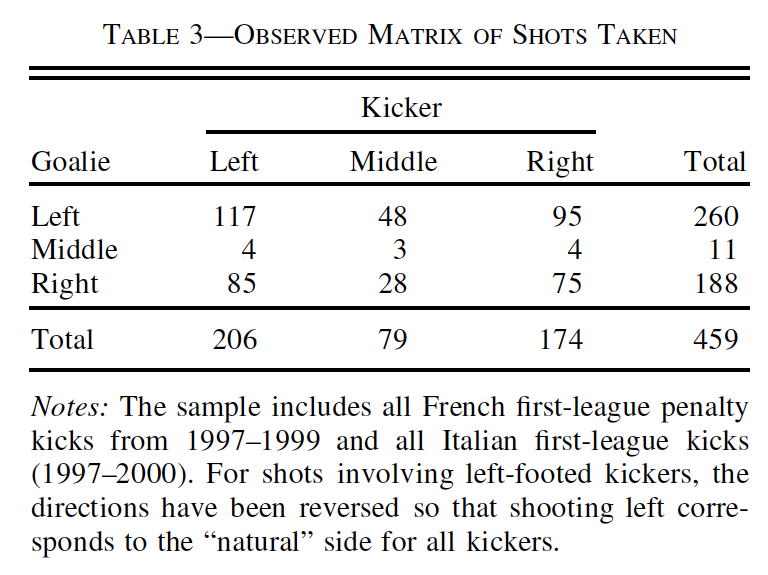
Tennis Service Game
Player 1 chooses whether to serve to player 2’s forehand, center or backhand side, and player 2 chooses which side to favor for the return. Unique mixed strategy equilibrium, which puts positive probability only on strategies C and B for either player.
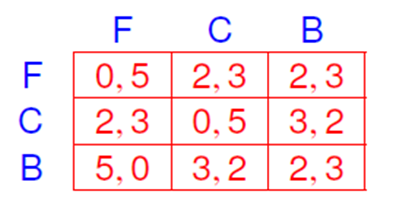
- For player 1 , playing C with probability \epsilon and B with probability 1-\epsilon \mathrm{s}. dominates F.
- If player 1 never chooses F, then C s. dominates F for player 2 .
- In the remaining 2 \times 2 game, there is a unique equilibrium, in which both players place probability 1 / 4 on C and 3 / 4 on B.
Stag Hunt
Each player can choose to hunt hare by himself or hunt stag with the other. Stag offers a higher payoff, but only if players team up.
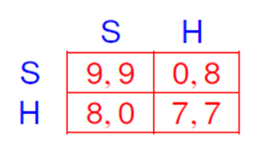
The game has two pure strategy Nash equilibria – (S, S) and (H, H) – and a mixed strategy Nash equilibrium – (7 / 8 S+1 / 8 H, 7 / 8 S+1 / 8 H).
Which Equilibrium is More Plausible?
- We may expect (S, S) to be played because it is Pareto dominant. However, if one player expects the other to hunt hare, he is much better off hunting hare himself; and the potential downside of choosing stag is bigger than the upside-hare is the safer choice.
- Harsanyi and Selten (1988): H is the risk-dominant action-if each player expects the other to choose either action with probability 1 / 2, then H has a higher expected payoff (7.5) than S (4.5).
- For a player to optimally choose stag, he should expect the other to play stag with probability \geq 7 / 8.
- Coordination problem may persist even if players communicate: regardless of what i intends to do, he would prefer j to play stag, so attempts to convince j to play stag are cheap talk.
Epistemic Foundations
- Aumann and Brandenburger (1995): a framework that can be used to examine the epistemic foundations of Nash equilibrium.
- The primitive of their model is an interactive belief system in which there is a possible set of types for each player; each type has associated to it a payoff for every action profile, a choice of which action to play, and a belief about the types of the other players.
- In a 2-player game, if the game being played, the rationality of the players, and their conjectures are all mutually known, then the conjectures constitute a Nash equilibrium.
- For games with more than 2 players, we need to assume additionally that players have a common prior and that conjectures are commonly known. This ensures that any two players have identical and separable (independent) conjectures about other players, consistent with a mixed strategy profile.
Evolutionary Foundations
- Solution concepts motivated by presuming that players make predictions about their opponents’ play by introspection and deduction, using knowledge of their opponents’ payoffs, rationality…
- Alternatively, assume players extrapolate from past observations of play in “similar” games and best respond to expectations based on past observations.
- Cournot (1838) suggested that players take turns setting their outputs in the duopoly game, best responding to the opponent’s last-period action.
- Simultaneous action updating, best responding to average play, populations of players anonymously matched (another way to think about mixed strategies), etc.
- If the process converges to a particular steady state, then the steady state is a Nash equilibrium.
Convergence
How sensitive is the convergence to the initial state? If convergence obtains for all initial strategy profiles sufficiently close to the steady state, we say that the steady state is asymptotically stable.
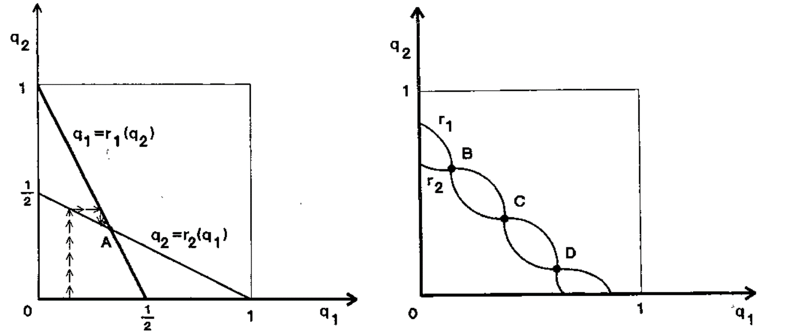
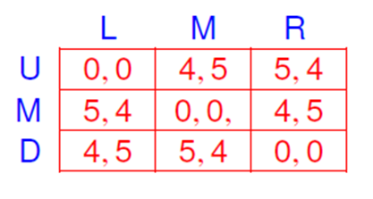
Remarks
- Evolutionary processes are myopic and do not offer a compelling description of behavior.
- Such processes do not provide good predictions for behavior in the actual repeated game, if players care about play in future periods and realize that their current actions can affect opponents’ future play.
1.7 Existence of Nash Equilibrium
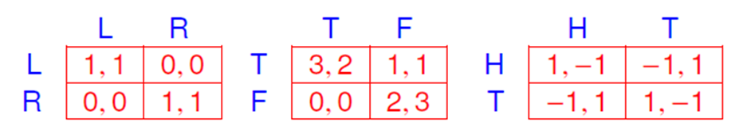
- The coordination game and the battle of the sexes have multiple equilibria.
- Matching pennies does not have a pure strategy equilibrium. In the unique equilibrium, both players mix 50-50.
Theorem 1.3 Every finite game has an equilibrium (potentially in mixed strategies).
Nash (1950)
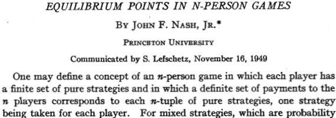
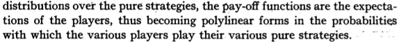
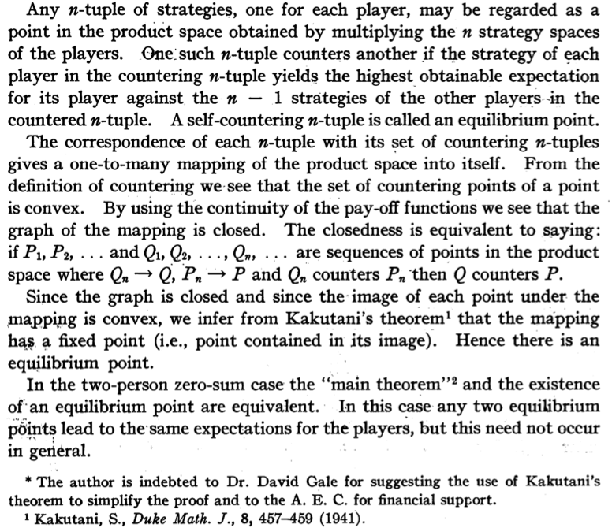
Courtesy of John F. Nash, Jr. “Equilibirum Points in N-Person Games”. Proceedings of the National Academy of Sciences of the United States of America 36 no. 1 (1949): 48-49.
Kakutani
A long time ago, the Japanese mathematician Kakutani asked me why so many economists had attended the lecture he had just given. When I told him that he was famous because of the Kakutani fixed-point theorem, he replied, ‘What is the Kakutani fixed-point theorem?’
Ken Binmore, Playing for Real, 2007
Existence of Nash Equilibria
Prove the existence of Nash equilibria in a more general setting.
- Continuity and compactness assumptions are indispensable, usually needed for the existence of solutions to optimization problems.
- Convexity is usually required for fixed-point theorems.
Need some topology prerequisites…
Correspondences
Topological vector spaces X and Y
- A correspondence F: X \rightrightarrows Y is a set valued function taking elements x \in X into subsets F(x) \subseteq Y.
- G(F)=\{(x, y) \mid y \in F(x)\}: graph of F
- x \in X is a fixed point of F if x \in F(x)
- F is non-empty/closed-valued/convex-valued if F(x) is non-empty/closed/convex for all x \in X.
Closed Graph
- A correspondence F has closed graph if G(F) is a closed subset of X \times Y.
- If X and Y are first-countable spaces (such as metric spaces), then F has closed graph iff for any sequence \left(x_{m}, y_{m}\right)_{m \geq 0} with y_{m} \in F\left(x_{m}\right) for all m \geq 0, which converges to a pair (x, y), we have y \in F(x).
- Correspondences with closed graph are closed-valued.
Upper Hemicontinuity
- A correspondence F is upper hemicontinuous at x \in X if for every open neighborhood V_{Y} of F(x), there exists a neighborhood V_{X} of x such that x^{\prime} \in V_{X} \Rightarrow F\left(x^{\prime}\right) \subset V_{Y}.
- Closed graph and upper hemicontinuity may have different implications. The constant correspondence F:[0,1] \rightrightarrows[0,1] defined by F(x)=(0,1) is upper hemicontinuous, but does not have a closed graph.
The two concepts coincide for closed-valued correspondences in most spaces of interest.
Theorem 1.4 (Closed Graph Theorem) A correspondence F: X \rightrightarrows Y with compact Hausdorff range Y is closed iff it is upper hemicontinuous and closed-valued.
The Maximum Theorem
Theorem 1.5 (Berge’s Maximum Theorem) Suppose that f: X \times Y \rightarrow \mathbb{R} is a continuous function, where X and Y are metric spaces and Y is compact.
- The function M: X \rightarrow \mathbb{R}, defined by
M(x)=\max _{y \in Y} f(x, y)
is continuous.
- The correspondence F: X \rightrightarrows Y,
F(x)=\arg \max _{y \in Y} f(x, y)
is nonempty valued and has a closed graph.
A Fixed-Point Theorem
Theorem 1.6 (Kakutani’s Fixed-Point Theorem) Let X be a non-empty, compact, and convex subset of a Euclidean space and let the correspondence F: X \rightrightarrows X have closed graph and non-empty convex values. Then the set of fixed points of F is non-empty and compact.
In game theoretic applications, X is usually the strategy space, assumed to be compact and convex when we include mixed strategies.
F is typically the best response correspondence, which is non-empty valued and has a closed graph by the Maximum Theorem.
Convexity
To ensure that F is convex-valued, assume that payoff functions are quasi-concave.
Definition 1.9 If X is a convex subset of a real vector space, then the function f: X \rightarrow \mathbb{R} is quasi-concave if
f(t x+(1-t) y) \geq \min (f(x), f(y)), \forall t \in[0,1], x, y \in X
Quasi-concavity implies convex upper contour sets and convex arg max.
Existence of Nash Equilibrium
Theorem 1.7 Consider a game (N, S, u) such that S_{i} is a convex and compact subset of a Euclidean space and that u_{i} is continuous in s and quasi-concave in s_{i} for all i \in N. Then there exists a pure strategy Nash equilibrium.
The result implies the existence of pure strategy Nash equilibria in generalizations of the Cournot competition game.
Theorem 9 also implies the existence of mixed strategy Nash equilibria in finite games.
- Let B_{i}\left(s_{-i}\right):=\arg \max _{s_{i}^{\prime} \in S_{i}} u_{i}\left(s_{i}^{\prime}, s_{-i}\right) and define F: S \rightrightarrows S,
F(s)=\left\{\left(s_{1}^{*}, \ldots, s_{n}^{*}\right) \mid s_{i}^{*} \in B_{i}\left(s_{-i}\right), \forall i \in N\right\}=\prod_{i \in N} B_{i}\left(s_{-i}\right), \forall s \in S
- Since S is compact and the utility functions are continuous, the Maximum Theorem implies that B_{i} and F are non-empty valued and have closed graphs.
- As u_{i} is quasi-concave in s_{i}, the set B_{i}\left(s_{-i}\right) is convex for all i and s_{-i}, so F is convex-valued.
- Kakutani’s fixed-point theorem \Rightarrow F has a fixed point,
s^{*} \in F\left(s^{*}\right)
s_{i}^{*} \in B_{i}\left(s_{-i}^{*}\right), \forall i \in N \Rightarrow s^{*} is a Nash equilibrium.
Existence of Mixed-Strategy Nash Equilibrium
Every finite game has a mixed strategy Nash equilibrium.
Since S is finite, each \Delta\left(S_{i}\right) is isomorphic to a simplex in a Euclidean space, which is convex and compact. Player i’s expected utility u_{i}(\sigma)=\sum_{s} u_{i}(s) \sigma_{1}\left(s_{1}\right) \cdots \sigma_{n}\left(s_{n}\right) from a mixed strategy profile \sigma is continuous in \sigma and linear-hence also quasi-concave-in \sigma_{i}. The game \left(N, \Delta\left(S_{1}\right), \ldots, \Delta\left(S_{n}\right), u\right) satisfies the assumptions of Theorem 9. Therefore, it admits a Nash equilibrium \sigma^{*} \in \Delta\left(S_{1}\right) \times \cdots \times \Delta\left(S_{n}\right), which can be interpreted as a mixed Nash equilibrium in the original game.
Upperhemicontinuity of Nash Equilibrium
Fix N and S.
- X : compact metric space of payoff-relevant parameters
- S is a compact metric space (or a finite set)
- payoff function u_{i}: S \times X \rightarrow \mathbb{R} of every i \in N is continuous in strategies and parameters
- N E(x) and PNE (x): sets of Nash equilibria and pure Nash equilibria, resp., of game (N, S, u(\cdot, x)) in which it is common knowledge that the parameter value is x
- Endow the space of mixed strategies with the weak topology.
Theorem 1.8 The correspondences NE and PNE have closed graphs.
Consider any sequence \left(s^{m}, x^{m}\right) \rightarrow(s, x) with s^{m} \in \operatorname{PNE}\left(x^{m}\right) for each m. Suppose that s \notin P N E(x). Then
u_{i}\left(s_{i}^{\prime}, s_{-i}, x\right)-u_{i}\left(s_{i}, s_{-i}, x\right)>0
for some i \in N, s_{i}^{\prime} \in S_{i}. Then \left(s^{m}, x^{m}\right) \rightarrow(s, x) and the continuity of u_{i} imply that
u_{i}\left(s_{i}^{\prime}, s_{-i}^{m}, x^{m}\right)-u_{i}\left(s_{i}^{m}, s_{-i}^{m}, x^{m}\right)>0
for sufficiently large m. However,
u_{i}\left(s_{i}^{\prime}, s_{-i}^{m}, x^{m}\right)>u_{i}\left(s_{i}^{m}, s_{-i}^{m}, x^{m}\right)
contradicts s^{m} \in \operatorname{PNE}\left(x^{m}\right).